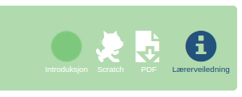
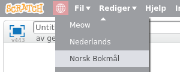

Scratch er et grafisk programmeringsspråk utviklet spesielt for at barn og unge enkelt skal lære seg programmering. Denne veiledningen viser hvordan du kan holde et kodekurs eller en skoletime hvor elevene møter Scratch for første gang.
Før kurset
Scratch krever ikke at du har mye programmeringserfaring selv for å veilede. Miljøet er laget for at det skal være raskt og enkelt for barna å komme i gang, og introduksjonsoppgavene hjelper barna å lære selvstendig. Nedenfor er en sjekkliste med forberedelser det likevel er nyttig å gå gjennom før kodekurset.
Sjekkliste
Introduksjon
passer til en førstegangsintroduksjon til Scratch. Du kan plukke en litt etter interesser til barna eller basert på temaet i oppgaven.
Noen oppgaver har en tilhørende lærerveiledning. Denne vil være tilgjengelig øverst i tittelen på oppgaven.

Les gjennom denne, og merk deg spesielt om det er tips til å løse typiske utfordringer barna kan komme borti. Det kan være nyttig å ha disse tilgjengelig på en utskrift under kurset.
Skriv ut oppgaven på papir til elevene. Det er mulig å jobbe med oppgavene uten å skrive dem ut ved at barna har oppgaveteksten åpen i en egen fane i nettleseren. Men dette skaper ekstra komplikasjoner ved at de stadig må bytte faner, huske det de leser osv. Vi anbefaler derfor at du skriver ut oppgavene, ihvertfall de første gangene til barna blir mer erfarne med å bruke Scratch.
For best mulig utskrift bør du laste ned PDF-versjonen av oppgaven, også denne tilgjengelig øverst i tittellinjen. Pass på at du skriver ut i farger, da fargene på koden er viktig for å finne igjen de riktige kodeklossene.
Alle oppgavene passer for at barna jobber i par om du vil det. Dette vil gjerne gi dem en nyttig erfaring i samarbeid, og vil ofte gjøre det enklere for deg som veileder, siden du vil ha færre datamaskiner å følge opp og barna vil naturlig hjelpe hverandre mer.
For de yngste barna er også det å lese oppgaven en utfordring. Om du skal holde en kodeklubb på kveldstid så oppfordre foreldrene (ihvertfall til barna fra rundt 10 år og yngre) til å være med og hjelpe sine barn med oppgavene.
Scratch kjøres i nettleseren og er derfor i utgangspunktet avhengig av at alle har nettilgang. Dersom du ikke er 100% trygg på at alle barna vil komme seg på nett bør du ha Scratch offline tilgjengelig. Dette er en versjon av Scratch som man installerer som et vanlig program, og hvor man kan programmere også uten nettforbindelse.
Du bør forberede en minnepenn hvor du på forhånd har lastet ned Adobe Air og Scratch offline for de forskjellige operativsystemene.
Opprett brukere
Det første du bør gjøre på selve kodekurset er å la alle barna opprette brukere. Det er strengt tatt ikke nødvendig å ha en scratchbruker for å programmere Scratch, men brukeren åpner en del fordeler som at det blir enklere å lagre prosjektet sitt, prosjektet blir tilgjengelig på alle datamaskiner osv.
Sjekkliste
Om barna ikke har sin egen e-postadresse kan de gjerne bruke foreldrenes e-postadresse. Dersom de ikke husker den kan du være behjelpelig med å la de bruke din e-postadresse (aller helst oppretter du en egen adresse til dette formålet). Klikk i såfall gjennom e-postene du får i etterkant av kurset, og bekreft kontoene.
Introduser Scratchmiljøet
Etter at alle barna har opprettet sine brukere bør du introdusere Scratchmiljøet gjennom en kort presentasjon i fellesskap. Denne trenger ikke ta mer enn rundt 5 minutter, slik at barna får mest mulig tid til å prøve på egenhånd.
Under er et eksempel på en presentasjon som introduserer de viktigste elementene i Scratchmiljøet, og er mer enn nok til at barna kommer i gang på egenhånd. Alternativt, kan du også jobbe gjennom første steg i oppgaven sammen med barna.
Presentasjon
Dersom denne siden ikke er på norsk kan du endre språk ved å klikke på jordkloden øverst til venstre.

Scenen øverst til venstre er der ting vil skje. Snart skal vi fortelle katten at den skal flytte på seg!
Figurlisten under scenen viser figurene i programmet vårt. Etterhvert vil vi ha flere figurer enn katten.
Kodevinduet til høyre, inkludert listen over klosser i midten, er der selve programmeringen skjer.
gå (10) steg
vend høyre (15) grader
Klikk på kodeblokken og vis hvordan katten både flytter seg og roterer. Vi har laget et skript som gir to kommandoer til katten!
I Scratch kaller vi en slik samling kodeklosser som utføres sammen for et skript. Alle skriptene i et prosjekt utgjør tilsammen et program.
Gå til Utseende-kategorien, og klikk på klossen endre [farge v] effekt med (25). Vis hvordan katten endrer farge. Legg denne klossen øverst i skriptet ditt, slik at det ser ut som følger:
endre [farge v] effekt med (25)
gå (20) steg
vend høyre (15) grader
endre [farge v] effekt med (25)
gå (20) steg
pek mot [musepeker v]
Vis barna hvordan katten nå vil se mot musepekeren når du klikker på skriptet.
Klikk på Styring-kategorien, og dra ut en for alltid-kloss slik at den legger seg rundt skriptet ditt.
for alltid
endre [farge v] effekt med (25)
gå (20) steg
pek mot [musepeker v]
slutt
Før du klikker på skriptet, spør barna hva de tror vil skje!
Ofte er dette et passende sted å avslutte presentasjonen. Barna er som regel veldig engasjerte og klare til å prøve på egenhånd.
La barna åpne datamaskinene sine. Minn dem på at de skal klikke Programmering for å prøve selv. Ofte vil de teste ut noe av det du viste dem i presentasjonen. La dem gjerne gjøre dette et par minutter før du minner dem på oppgaven, og ber dem begynne å jobbe med den.
Etter kurset
Det er etterhvert mange barn, kodeklubber og skoler som bruker oppgavene og veiledningene her på kodeklubben.github.io. Dersom du oppdager feil eller har forslag til forbedringer på noen av sidene er det derfor veldig nyttig om du melder fra om dette.
På alle sider - oppgaver og veiledninger - er det en Rapporter et problem-knapp nederst som du kan trykke for å sende oss en tilbakemelding. Bruk denne! Vi er veldig takknemlige for alle forslag som kan gjøre disse sidene enda nyttigere!
Forbedre denne siden
Funnet en feil? Kunne noe vært bedre? Hvis ja, vennligst gi oss tilbakemelding ved å lage en sak på Github eller fiks feilen selv om du kan. Vi er takknemlige for enhver tilbakemelding!

 Sjekkliste
Sjekkliste